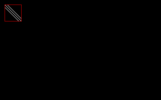
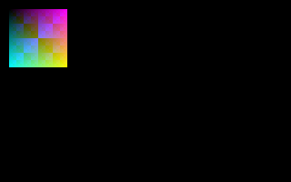

Help Center›FreeBASIC
ImageInfofunction
Retrieves information about an image
Syntax
Declare Function ImageInfo ( ByVal image As Const Any Ptr, ByRef width As Long = 0, ByRef height As Long = 0, ByRef bypp As Long = 0, ByRef pitch As Long = 0, ByRef pixdata As Any Ptr = 0, ByRef size As Long = 0 ) As LongDeclare Function ImageInfo ( ByVal image As Const Any Ptr, ByRef width As LongInt, ByRef height As LongInt, ByRef bypp As LongInt = 0, ByRef pitch As LongInt = 0, ByRef pixdata As Any Ptr = 0, ByRef size As LongInt = 0 ) As LongParameters
| Name | Description | |
|---|---|---|
image | The address of the image. | |
width | Stores the width of the image, in pixels. | |
height | Stores the height of the image, in pixels. | |
bypp | Stores the bytes per pixel of the image - i.e. the size of a single pixel, in bytes. | |
pitch | Stores the pitch of the image - i.e. the size of each scanline (row), in bytes. Note that this may be more than just | |
width * bypp | , because the scanlines may be padded to allow them to be aligned better in memory. | |
pixdata | Stores the address of the start of the first scanline of the image. | |
size | Stores the size of the image in memory, in bytes. |
Return value
If
image doesn't point to a valid image, one (1) is returned. Otherwise, width, height, bypp, pitch, pixdata and size are assigned appropriate values, and zero (0) is returned.Description
ImageInfo provides various information about an image, such as its dimensions and color depth, but also provides you with the information you need to directly access all the pixel data in the pixel buffer.It can also provide the size of the image in memory, which is useful for allocating memory to copy the existing image, or to write the image to a file.
ImageInfo is an alternative way to access the main characteristics of an image, rather than directly accessing the internal FB.IMAGE structure (defined in fbgfx.bi) through a typed pointer to member data.The error code returned by
ImageInfo can be checked using Err in the next line. The function version of ImageInfo returns directly the error code as a 32 bit Long.Remarks
Usage
in the LONG (or INTEGER<32>) version of the function:
result = ImageInfo( image [, [ width ] [, [ height ] [, [ bypp ] [, [ pitch ] [ , [ pixdata ] [, size ]]]]]] )
in the LONGINT (or INTEGER<64>) version of the function:
result = ImageInfo( image , width , height [, [ bypp ] [, [ pitch ] [ , [ pixdata ] [, size ]]]] )
Version
- Before fbc 1.08.0:
Syntax:
Usage:
Declare Function ImageInfo ( ByVal image As Any Ptr, ByRef width As Integer = 0, ByRef height As Integer = 0, ByRef bypp As Integer = 0, ByRef pitch As Integer = 0, ByRef pixdata As Any Ptr = 0, ByRef size As Integer = 0 ) As Longresult = ImageInfo( image [, [ width ] [, [ height ] [, [ bypp ] [, [ pitch ] [, [ pixdata ] [, size ]]]]]] )Dialect Differences
- Not available in the -lang qb dialect unless referenced with the alias
__Imageinfo.
Differences from QB
- New to FreeBASIC
See also
Example
'' pixelptr(): use imageinfo() to find the pointer to a pixel in the image
'' returns null on error or x,y out of bounds
Function pixelptr(ByVal img As Any Ptr, ByVal x As Integer, ByVal y As Integer) As Any Ptr
Dim As Long w, h, bypp, pitch
Dim As Any Ptr pixdata
Dim As Long result
result = ImageInfo(img, w, h, bypp, pitch, pixdata)
If result = 0 Then '' seems like a valid image
If x < 0 Or x >= w Then Return 0
If y < 0 Or y >= h Then Return 0
Return pixdata + y * pitch + x * bypp
Else
Return 0
End If
End Function
'' usage example:
'' 320*200 graphics screen, 8 bits per pixel
ScreenRes 320, 200, 8
Dim As Any Ptr ip '' image pointer
Dim As Byte Ptr pp '' pixel pointer (use byte for 8 bits per pixel)
ip = ImageCreate(32, 32) '' create an image (32*32, 8 bits per pixel)
If ip <> 0 Then
'' draw a pattern on the image
For y As Integer = 0 To 31
For x As Integer = y - 5 To y + 5 Step 5
'' find the pointer to pixel at x,y position
'' note: this is inefficient to do for every pixel!
pp = pixelptr(ip, x, y)
'' if success, plot a value at the pixel
If (pp <> 0) Then *pp = 15
Next x
Next y
'' put the image and draw a border around it
Put (10, 10), ip, PSet
Line (9, 9)-Step(33, 33), 4, b
'' destroy the image to reclaim memory
ImageDestroy ip
Else
Print "Error creating image!"
End If
Sleep

'' Create 32-bit graphics screen and image.
ScreenRes 320, 200, 32
Dim image As Any Ptr = ImageCreate( 64, 64 )
Dim pitch As Long
Dim pixels As Any Ptr
'' Get enough information to iterate through the pixel data.
If 0 <> ImageInfo( image, ,,, pitch, pixels ) Then
Print "unable to retrieve image information."
Sleep
End
End If
'' Draw a pattern on the image by directly manipulating pixel memory.
For y As Integer = 0 To 63
Dim row As ULong Ptr = pixels + y * pitch
For x As Integer = 0 To 63
row[x] = RGB(x * 4, y * 4, (x Xor y) * 4)
Next x
Next y
'' Draw the image onto the screen.
Put (10, 10), image
ImageDestroy( image )
Sleep

Reference
- Documented in KeyPgImageInfo.html